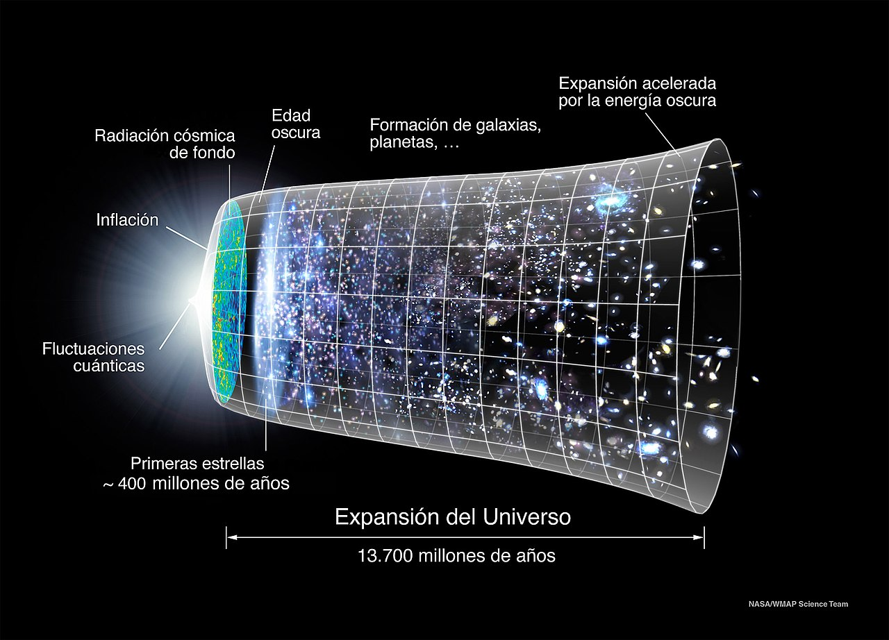

El Universo

Clickea el Universo Observable para poder verlo completo
¿Qué es el Universo?
El universo se refiere al vasto conjunto de todas las galaxias, estrellas, planetas, gases, polvo cósmico y energía que existen en el espacio-tiempo. Como dijo Carl Sagan, reconocido cosmólogo, astrofísico y divulgador científico, "El universo es todo lo que es, lo que fue y lo que será". Es una inmensidad asombrosa que nos rodea y se extiende más alla de nuestra imaginacion, que despierta nuestra curiosidad y nos invita a explorar y comprender sus misterios.
El universo es vasto y en constante expansión, y se cree que se originó hace aproximadamente 13.8 mil millones de años en el evento conocido como el Big Bang.
El universo se compone de una amplia variedad de estructuras, desde galaxias individuales hasta cúmulos de galaxias, supercúmulos y filamentos cósmicos que forman una compleja red a gran escala. Además, el universo contiene una gran cantidad de materia oscura y energía oscura, componentes aún no completamente comprendidos pero que desempeñan un papel importante en la evolución y la expansión del universo.
El Universo nunca deja de expandirse
La expansion del universo es un fenómeno estudiado durante décadas. Este espacio increiblemente inmenso está en constante expansión, debido a dicho fenómeno. Observaciones científicas han revelado que el universo se está expandiendo, es decir, las galaxias y otras estructuras cósmicas están alejándose unas de otras. Esta idea revolucionaria fue propuesta por primera vez por el astrónomo Edwin Hubble en la década de 1920, y desde entonces ha sido confirmada y refinada por numerosas investigaciones.
Según la teoría del Big Bang, el universo comenzó como un punto extremadamente denso y caliente hace aproximadamente 13.8 mil millones de años, y desde entonces ha estado en constante expansión. Es importante destacar que esta expansión no ocurre en un espacio vacío, sino que es la expansión del propio espacio-tiempo. A medida que el espacio se expande, las distancias entre los objetos aumentan; y esta expansión sigue hasta el dia de hoy
La historia del cómo se descubrió que el Universo se expande comenzó a principios del siglo pasado. Fue en 1912, cuando el astrónomo estadounidense, Vesto Slipher, reportó que la mayoría de unas misteriosas «nebulosas» (que luego resultaron ser galaxias) que se estudiaron en esa época mostraban evidencia de que sus espectros se desplazan hacia el rojo. La radiación electromagnética emitida por una fuente se dirige a ese color si ésta se aleja, y al azul si se acerca. Es lo que se conoce como efecto Doppler.
Hubble y Milton Humason midieron las distancias entre esas galaxias que descubrieron y usaron los desplazamientos al rojo para calcular su velocidad de recesión con el efecto Doppler. De manera que, en 1929, llegaron a la conclusión de que las galaxias se alejan con una velocidad que es directamente proporcional a su distancia.
El hecho de que el Universo se expande concordó muy bien con las predicciones que hizo el matemático, Alexei Friedmann, en 1922. Él resolvió las ecuaciones de campo de Einstein para el caso, siendo esto uno de los pilares de la teoría cosmológica del Big Bang. Según esta teoría, el Universo no es estacionario, está en constante movimiento. Por las condiciones iniciales y por la composición material y energética que tiene el Universo observado, las ecuaciones de Friedmann indican que tiene que estar en expansión
El Universo Observable
Sin embargo, aunque el universo es increiblemente inmenso y está en constante expansión, hay una limitación en cuanto a lo que podemos observar directamente, debido a la velocidad finita de la luz y la edad del universo. Esto nos lleva al concepto del Universo Observable, que se refiere a la porción del universo desde la cual la luz ha tenido tiempo suficiente para llegar hasta nosotros desde el comienzo del mismo. Aunque el Universo Observable es inmenso en sí mismo, estimado en unos 93 mil millones de años luz de diámetro, no podemos afirmar con certeza lo que hay más allá de esta región, ya que la luz de esas áreas aún no ha tenido tiempo para alcanzarnos. Por lo tanto, el Universo Observable es la porción del universo que podemos explorar y estudiar directamente hasta ahora, mientras que el resto del universo aún permanece en gran medida desconocido para nosotros
Origen del Universo
Según la teoría del Big Bang, aceptada ampliamente por la comunidad científica, el universo comenzó hace aproximadamente 13.8 mil millones de años como una singularidad infinitamente densa y caliente. En un instante, el espacio, el tiempo, la materia y la energía surgieron de esta singularidad en una explosión cósmica sin precedentes. A medida que el universo se expandía y enfriaba, se formaron partículas subatómicas, átomos, estrellas, galaxias y todo lo que conocemos hoy en día. Sin embargo, la pregunta fundamental de qué desencadenó el Big Bang y qué existió antes de ese momento aún permanece sin respuesta definitiva. Diversas teorías, como la inflación cósmica y la existencia de múltiples universos, han sido propuestas para tratar de comprender el origen del universo. A través de la observación, la investigación y la exploración continua, los científicos buscan arrojar luz sobre este enigma fundamental y descubrir los secretos que se esconden en los albores del cosmos.
Observación y estudio del Universo
El estudio y la observación del universo han sido fundamentales para expandir nuestra comprensión del cosmos y nuestra propia existencia en él. Mediante la observación de objetos celestes, como estrellas, galaxias y fenómenos cósmicos, los astrónomos han logrado descubrir y revelar una gran cantidad de conocimientos sobre el universo en el que habitamos. Utilizando telescopios terrestres y espaciales, así como tecnologías avanzadas de detección, hemos podido explorar y analizar la luz y las radiaciones emitidas por estos objetos distantes. La información recopilada a partir de estas observaciones nos ha brindado valiosas pistas sobre la composición del universo, su evolución, la existencia de planetas fuera de nuestro sistema solar, la naturaleza de la materia oscura y la energía oscura, entre otros fenómenos cósmicos intrigantes. Además, las misiones espaciales y los proyectos internacionales, como el telescopio espacial Hubble, y ahora el telescopio James Webb, y el Observatorio de Ondas Gravitacionales con Interferómetro Láser (LIGO), han abierto nuevas ventanas hacia el universo, revelando detalles sorprendentes y desafiando nuestras concepciones previas. La observación y el estudio del universo son pilares esenciales de la astronomía y nos permiten expandir constantemente nuestra comprensión del vasto y maravilloso cosmos en el que habitamos.